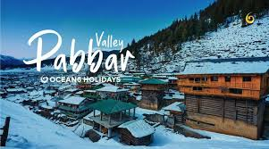
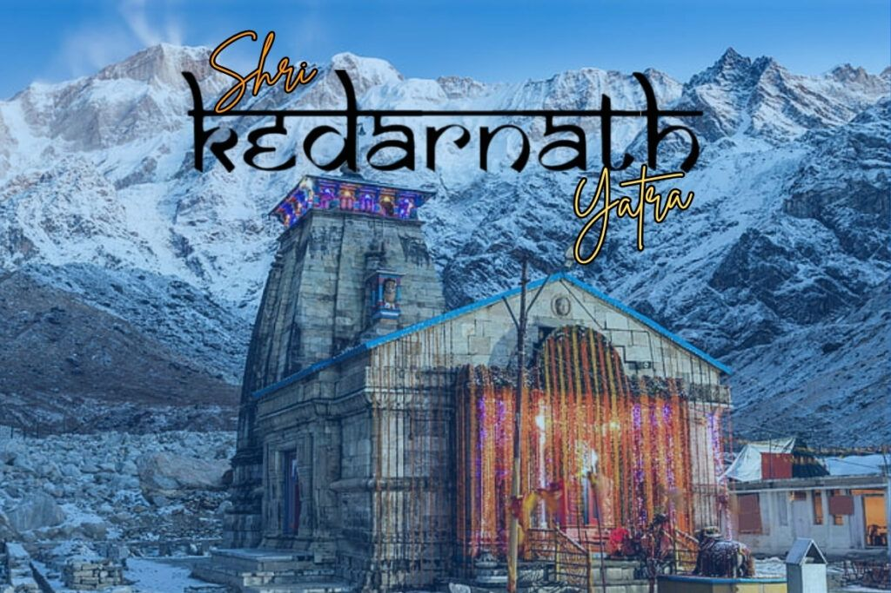

Pabbar valley
Pabbar Valley is an enchanting, offbeat valley located roughly 80 to 100 kilometres east of Shimla in Himachal Pradesh, India. Carved by the pristine Pabbar River, this region—frequently referred to as the Rohru Valley—is highly celebrated by adventurers.

Kedarnath
Kedarnath is located in the Rudraprayag district of Uttarakhand at an altitude of 3,584 metres, this ancient temple is dedicated to Lord Shiva. It stands as one of the 12 sacred Jyotirlingas in India and forms a key destination of the Char Dham Yatra

Shillong
Shillong is a scenic hill station and the capital city of Meghalaya, India, widely celebrated as the "Scotland of the East" due to its rolling pine-covered hills and cool climate. Situated at an average altitude of 1,520 metres above sea level in the East Khasi Hills district, it serves as the cultural, educational, and commercial hub of the state.